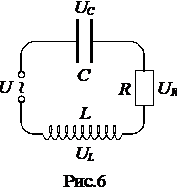
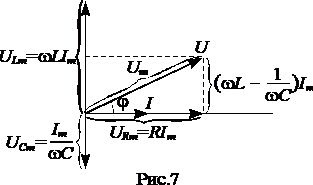
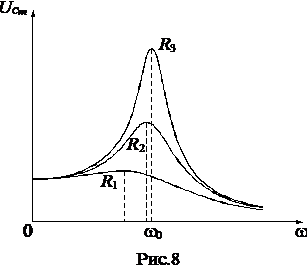
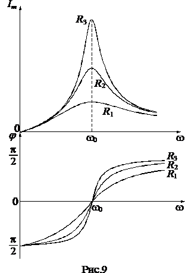
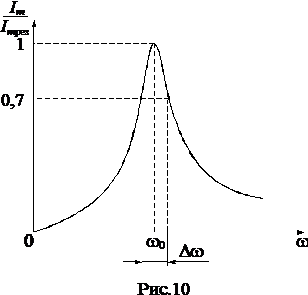

Вынужденные электрические колебания. Резонанс напряжений.
Чтобы вызвать вынужденные колебания, нужно оказывать на систему внешнее периодически изменяющееся воздействие. В случае электрических колебаний это можно осуществить, ес¬ли включить последовательно с эле-ментами контура переменную ЭДС или, разорвав контур, подать на обра-зовавшиеся контакты переменное на¬пряжение \(U=U_{m}cos(wt)\) (рис.6).

Для этой цепи из обобщенного закона Ома следует $$IR=-\frac{q}{C}-L\frac{dI}{dt}+U_{m}cos(wt). \; (16)$$
Произведя преобразование, получим уравнение $$\ddot{q}+2\beta \dot{q}+w^{2}_0q=\frac{U_{m}}{L}cos(wt).\; (17)$$Уравнение (17) совпадает с дифференциальным уравнением вынужденных механических колебаний. Частное решение этого уравне¬ния имеет вид $$q=q_{m}cos(wt-\psi ).\; (18)$$ где \(q_{m}=\frac{\frac{U_{m}}{L}}{\sqrt{(w^{2}_0-w^{2})+4\beta ^{2}w^{2}}}=\frac{U_{m}}{\sqrt{R^{2}+(wL-\frac{1}{wC})^{2}}}.\; (19)\) $$tg(\psi )=\frac{2\beta w}{w^{2}_0-w^{2}}=\frac{R}{\frac{1}{wC}-wL}.\; (20)$$
Общее решение получится, если к частному решению (18) прибавить общее решение соответствующего однородного уравнения. Это решение было получено в предыдущем параграфе (см. формулу (11)); оно содержит экспоненциальный множитель \(e^{-\beta t}\), поэтому по прошествии достаточного времени становится очень малым, и им можно пренебречь. Следовательно, установившиеся вынужденные колебания описываются функцией (18).
Продифференцировав выражение (18) по t, найдем силу тока в контуре при установившихся колебаниях: $$I=-\omega q_{m}sin(\omega t-\psi )=I_{m}cos(\omega t-\psi +\frac{\pi }{2})=I_{m}cos(\omega t-\varphi )\; (21)$$
где \(\varphi =\psi -\frac{\pi }{2}\) есть сдвиг по фазе между током и приложенным напряжением. При этом $$tg\varphi =\frac{\omega L-\frac{1}{\omega C}}{R}\; (22)$$ $$I_{m}=\frac{U_{m}}{\sqrt{R^{2}+(\omega L-\frac{1}{\omega C})^{2}}}\; (23)$$
Представим уравнение (16) в виде $$IR+\frac{q}{C}+L\frac{dI}{dt}=U_{m}cos(\omega t)\; (24)$$ или $$U_{R}+U_{C}+U_{L}=U_{m}cos(\omega t)\; (25)$$
Таким образом, сумма напряжений на отдельных элемен¬тах контура равна в каждый момент времени напряже¬нию, приложенному извне (см. рис.6).
В соответствии с (24) $$U_{R}=RI_{m}cos(\omega t-\varphi )\; (26)$$
Разделив выражение (18) на емкость, получим напряжение на конденсаторе $$U_{C}=\frac{q_{m}}{C}cos(\omega t-\psi )=U_{Cm}cos(\omega t-\varphi -\frac{\pi }{2}),\; (27)$$ здесь \(U_{Cm}=\frac{I_{m}}{\omega L}\)
Умножив производную функцию (21) на L, получим напряжение на индуктивности: $$U_{L}=L\frac{dI}{dt}=U_{Lm}cos(\omega t-\varphi +\frac{\pi }{2}),\; (28)$$ здесь \(U_{Lm}=I_{m}\omega L\)
Сопоставление формул (26), (27) и (28) показывает, что напряжение на емкости отстает по фазе от силы тока на \(\frac{\pi }{2}\) (конденсатор не может зарядится мгновенно), а напряжение на индуктивности, в следствии явления самоиндукции, опережает ток, текущий в катушке, на \(\frac{\pi }{2}\).
Напряжение на активном сопротивлении изменяется в фазе с током. Фазовые соотношения можно представить очень наглядно с помощью векторной диаграммы. Напомним, что гармоническое колебание (или гармоническую функцию) можно задать с помощью вектора, длина которого равна амплитуде колебания, а направление вектора образует с некоторой осью угол, равный начальной фазе колебания. Возьмем в качестве прямой, от которой отсчитывается начальная фаза, ось токов. Тогда получается диаграмма, изображенная на рис.7 (R1>R2>R3).

Согласно (25) три функции UR, UC и UL в сумме должны быть равны приложенному напряжению U. В соответствии с этим напряжение U изображается на диаграмме вектором, равным сумме векторов UR, UC и UL.
Резонансная частота для заряда q и напряжения на конденсаторе UC равна $$\omega _{qres}=\omega _{Ures}=\sqrt{\omega ^{2}_0-2\beta ^{2}}=\sqrt{\frac{1}{LC}-\frac{R^{2}}{2L^{2}}}\leq \omega ^{2}_0.\; (29)$$
Резонансные кривые для UC изображены на рис.8 (резонансные кривые для q имеют такой же вид). При \(\omega \rightarrow 0\) резонансные кривые сходятся в одной точке с ординатой UC = Um , что соответствует напряжению, возникающему на конденсаторе при подключении его к источнику постоянного напряжения.

Резонансные кривые и фаза для силы тока изображены на рис.9 (R1>R2>R3). Амплитуда силы тока имеет максимальное значение при \(\omega L-\frac{1}{\omega C}=0\). Следовательно, резонансная частота для силы тока совпадает с собственной частотой контура \(\omega _{0}\): $$\omega _{Ires}=\omega _{0}=\frac{1}{\sqrt{LC}}.\; (30)$$
Отрезок, отсекаемый резонансными кривыми на оси Im, равен нулю – при постоянном напряжении установившийся ток в цепи с конденсатором течь не может.

При малом затухании (\(\beta ^{2}<<\omega ^{2}_0\)) отношение амплитуды напряжения на конденсаторе при резонансе к амплитуде внешнего напряжения будет равно $$\frac{U_{Cmres}}{U_{m}}=Q. \; (31)$$
Таким образом, добротность показывает, во сколько раз напряжение на конденсаторе может превысить приложенное напряжение.

Остроту резонансных кривых определяет также добротность контура. На рис.10 показана одна из резонансных кривых для силы тока в контуре. По вертикальной оси отложены не значения Im, соответствующие данной частоте, а отношения Im к Imres. Рассмотрим ширину кривой \(\Delta \omega\), взятую на высоте 0,7 (отношению амплитуд токов, равному 0,7, соответствует отношение мощностей, равное 0,72~0,5). Можно показать, что отношение этой ширины к резонансной частоте равно величине, обратной добротности контура: $$\frac{\Delta \omega }{\omega _{0}}=\frac{1}{Q}.\; (32)$$
Напомним, что формулы (31) и (32) верны лишь при больших значениях Q, т. е. в случае, когда затухание свободных колебаний в контуре мало.
Явление резонанса используется для выделения из слож¬ного напряжения нужной составляющей. Пусть напряже¬ние, приложенное к контуру, равно $$U=U_{m1}cos(\omega _{1}t+\alpha _{1})+U_{m2}cos(\omega _{2}t+\alpha _{2})+...$$
Настроив контур на одну из частот \(\omega _{1}\), \(\omega _{2}\) и т. д. (т. е. подобрав соответствующим образом его параметры C и L), можно получить на конденсаторе напряжение, в Q раз превышающее значение данной составляющей, в то время как напряжение, создаваемое на конденсаторе другими составляющими, будет слабым. Таким образом, резонанс – явление резкого возрастания напряжения при совпадении частоты \(\omega \) внешнего переменного напряжения с собственной частотой \(\omega _{0}\) контура. Такой процесс осуществляется, например, при настройке радиоприемника на нуж¬ную длину волны.